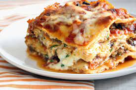

lasagna.html

Description
Lasagna is a wide, flat sheet of pasta. Lasagna can refer to either the
type of noodle or to the typical lasagna dish which is a dish made with
several layers of lasagna sheets with sauce and other ingredients, such
as meats and cheese, in between the lasagna noodles
Ingredients
- meats
- Onion and garlic
- tomato products
- sugar
- Spices and seasonings
- noodles
- Cheeses
- eggs
How to Make Lasagna Step-By-Step
- Make the meat sauce
- cook noodles
- Make the ricotta mixture
- Layer the lasagna according to the recipe instructions
- Cover with foil and bake
- Let the lasagna rest before serving